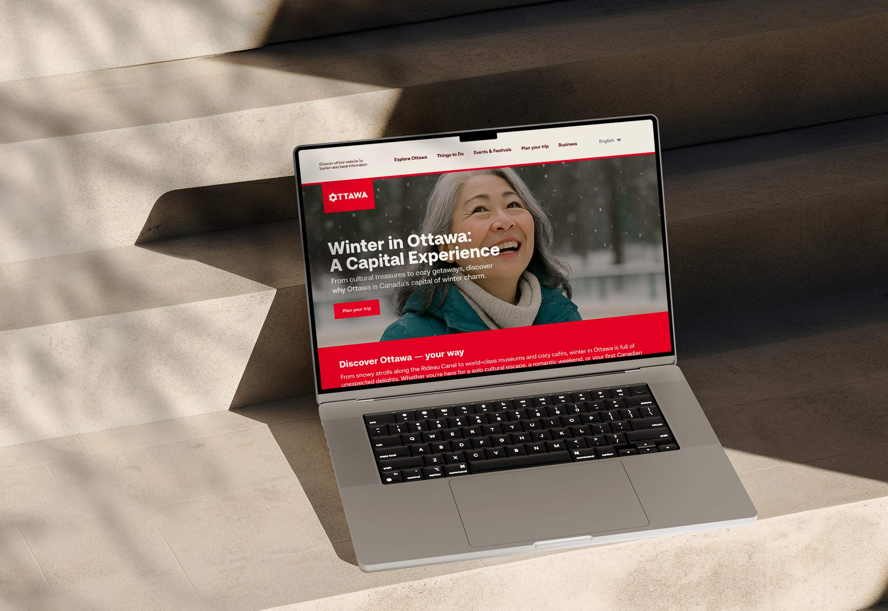

Website Design, User Experience Design, Copywriting
This Ottawa tourism website redesign addresses key usability issues by streamlining navigation, reorganizing content into logical groups, and refining the color palette. Excessive linking and information overload have been replaced with intuitive menus and a calming teal primary color, while the iconic red remains as an accent. The wordmark’s icon is featured prominently featured, creating a more user-friendly and visually appealing experience that better showcases the city to the world.
[1] A homepage design that is centred around each of the four distinct seasons.

[2] Space giving more prominence to the current City of Ottawa campaign video by diving deeper into the campaign slogan.

[3] Zoom hover effect for images.

[4] Streamlined navigation: The information architecture has been restructured to prioritize clear and intuitive navigation.
[5] A key focus of the redesign was developing content hubs centered on Ottawa's four distinct seasons.

[6] Content reorganization: The events calendar and overall website content has been reorganized into logical, user-focused groups, simplifying the information architecture.

[7] Text over image hover effect.

[8] While keeping the iconic Canada red as an accent, a calming teal has been introduced as the primary colour, reducing visual strain, enhancing accessibility.
© COPYRIGHT JENNIFER YAYA FALANGA 2025